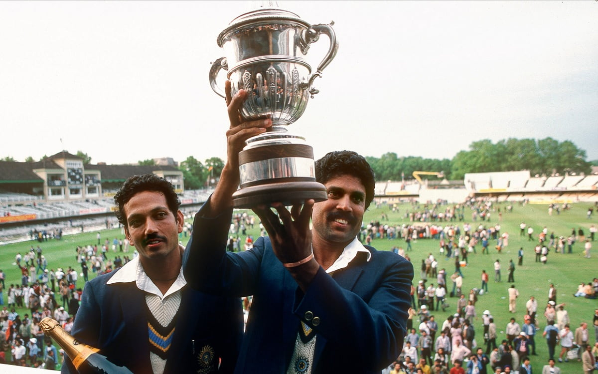

The Brink of Disaster: 17 for 5
History often hinges on incredibly fragile moments. For Indian cricket, that moment arrived on the chilly, overcast morning of June 18, 1983, at the picturesque Nevill Ground in Tunbridge Wells, England. It was a crucial group-stage match of the Prudential World Cup against Zimbabwe. If India lost, they were out of the tournament. The dream would be over.
Kapil Dev, the 24-year-old captain of a massive underdog Indian team, had just finished his morning shower. He was taking his time, expecting his openers-Sunil Gavaskar and Kris Srikkanth-to build a steady foundation. But Zimbabwe's fast bowlers, Peter Rawson and Kevin Curran, found lethal movement on the green, seaming pitch.
Suddenly, there was a frantic knock on the dressing room door. "Skip, you better pad up."
By the time Kapil Dev rushed out to the middle, the scoreboard read a terrifying, humiliating 9 for 4. A few minutes later, Yashpal Sharma was dismissed. It was 17 for 5. The top half of the Indian batting order had been completely obliterated. The match, the World Cup campaign, and arguably the future of Indian limited-overs cricket were staring into a dark abyss.
The Ghost Match: The BBC Strike and the Missing Footage

Before we dive into the innings, we must address the greatest tragedy surrounding it. There is absolutely no official video footage of this match. None.
In modern times, every single delivery is captured by 30 high-definition cameras, drone cams, and spider-cams. But on June 18, 1983, the BBC (British Broadcasting Corporation) technicians were on a nationwide industrial strike. Furthermore, the BBC didn't consider India vs. Zimbabwe at Tunbridge Wells to be a high-profile fixture. They had concentrated their limited non-striking broadcast crew on matches involving England and West Indies.
Because it was never recorded, the innings has passed into the realm of mythology. It is an oral history, passed down by the 4,000-odd spectators who were physically present, and the players who watched it from the pavilion. This lack of video footage only amplifies the mystical aura surrounding the knock.
Walking In: The Calm Before the Storm
When Kapil Dev walked out to the middle at 9/4, he didn't run. He didn't look panicked. He carried a heavy Slazenger bat and chewed his gum with his typical, arrogant swagger.
Roger Binny joined him at 17/5. According to teammates sitting in the dressing room, they were packing their bags, preparing for the humiliation of being bowled out for under 50 runs. But Kapil had a different plan. He told Binny, "Just stay with me. Let's bat for 10 overs. Let's see what happens."
Kapil started cautiously. He respected the moving ball. But as the sun started to break through the clouds and the pitch flattened out slightly, the "Haryana Hurricane" decided it was time to unleash.
The Counter-Attack That Defied Logic
What followed was a brutal, systematic dismantling of the Zimbabwean bowling attack. Kapil Dev didn't just play an innings of survival; he played an innings of total domination. He pulled, he cut, and he hit straight drives that cracked like gunshots across the small ground.
He reached his century, the first ever by an Indian in ODI cricket, in just 72 balls. But he didn't stop. He started clearing the short boundaries of Tunbridge Wells with ease. Some balls landed in the spectator tents. Some landed outside the stadium. He hit 16 boundaries and 6 massive sixes.
It wasn't mindless slogging. It was calculated, powerful, orthodox cricket strokes played with unnatural ferocity. He took the score from 17/5 to a highly competitive 266/8 by the end of the 60 overs. He finished unbeaten on 175 off 138 balls. At that time, it was the highest individual score in the history of ODI cricket.
The Silent Partner: Syed Kirmani's Heroics
While Kapil scored the runs, the innings would not have been possible without the unsung heroics of the lower order. Roger Binny contributed a vital 22. Madan Lal added a brave 17.
But the most important partnership came for the 9th wicket with wicket-keeper Syed Kirmani. When Kirmani walked in, India was 140/8. There were still over 20 overs left. Kapil told Kirmani, "Kiri bhai, don't get out. I will hit." Kirmani scored 24 runs, but more importantly, he survived. The duo put on an unbroken partnership of 126 runs. Kirmani provided the canvas upon which Kapil painted his masterpiece.
The Legacy: How One Match Created the Modern BCCI
India went on to win the match by 31 runs. They qualified for the semi-finals, defeated England, and then miraculously defended 183 against the mighty West Indies at Lord's to win the 1983 World Cup.
But what if Kapil Dev had gotten out for 10 runs against Zimbabwe? India would have been knocked out. The 1983 World Cup victory would never have happened. The subsequent cricket boom in India would never have materialized.
The 1983 victory is what made cricket the undisputed religion of India. It attracted massive corporate sponsorships, leading to the financial powerhouse that the BCCI is today. It inspired a young boy in Mumbai named Sachin Tendulkar to pick up a cricket bat. It paved the way for the IPL. All the billions of dollars, the massive stadiums, and the global dominance of Indian cricket today can be traced back to that single, untelevised morning in Tunbridge Wells.
Kapil Dev's 175 didn't just win a match. It saved an entire sport in a nation of a billion people.
Frequently Asked Questions
Why is there no video footage of Kapil Dev's 175?
The match was not broadcasted because the BBC technicians were on a nationwide industrial strike that day. Furthermore, the BBC had prioritized covering matches of other major teams at different venues, deeming India vs Zimbabwe as an unimportant fixture.
What was the score when Kapil Dev came out to bat?
India was struggling immensely at 9 for 4 when Kapil Dev walked in. It soon became 17 for 5, a position from which no team had ever recovered in ODI cricket history.
Where was the match played?
The match was played at the picturesque Nevill Ground in Tunbridge Wells, Kent, England on June 18, 1983.
Who did Kapil Dev build his partnerships with?
He built a crucial 60-run partnership with Roger Binny (22 runs), followed by an aggressive 62-run stand with Madan Lal (17 runs). He finally built an unbroken 126-run partnership with wicketkeeper Syed Kirmani (24*).
How many sixes did Kapil Dev hit in that innings?
Kapil Dev hit an incredible 6 sixes and 16 fours during his unbeaten innings of 175 off 138 balls.
What would have happened if India lost that match?
If India had lost to Zimbabwe, they would have been knocked out of the 1983 World Cup in the group stages. The historic World Cup victory at Lord's, which revolutionized Indian cricket and the BCCI, would never have happened.